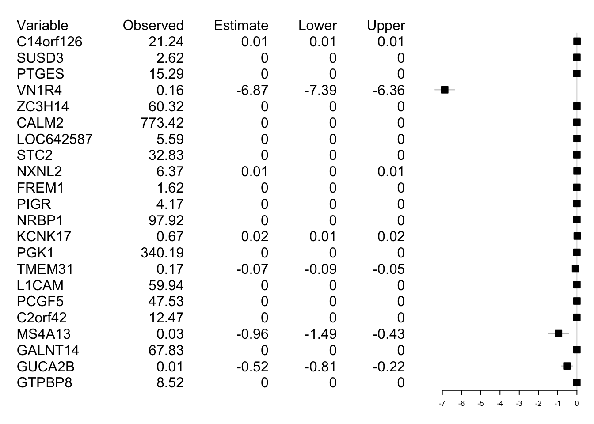
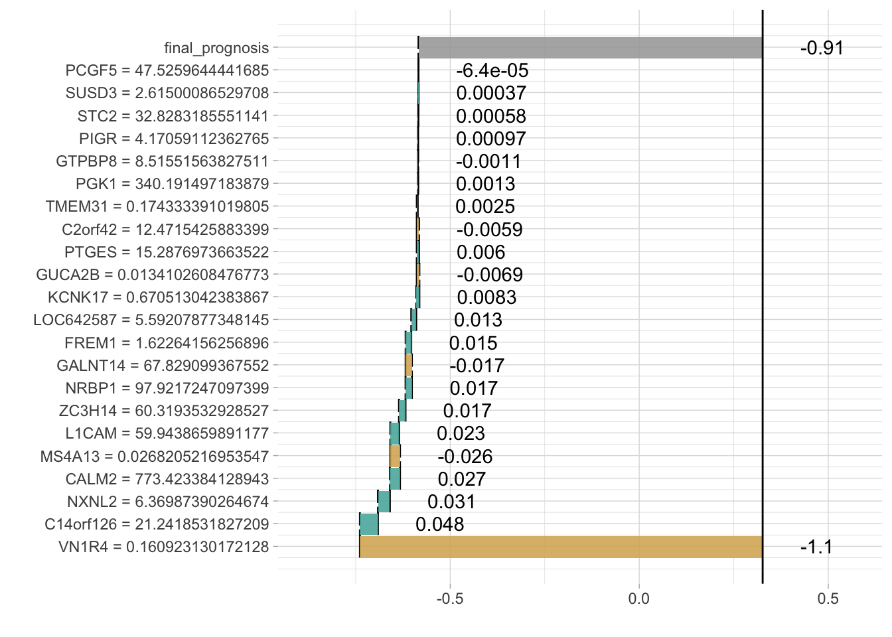

library(mlr)
library(live)
library(tidyverse)
library(MLExpRessoData)
library(randomForest)
set.seed(1)
# very basic normalisation
BRCA <- MLExpRessoData::BRCA_mRNAseq_all_surv
BRCA[,-(1:2)] <- 1000000*BRCA[,-(1:2)]/rowSums(BRCA[,-(1:2)])
options(expressions = 500000)
colnames(BRCA) <- make.names(colnames(BRCA))
# try first 10000 variables
nData <- BRCA[,-1]
pvals <- sapply(3:ncol(BRCA), function(i) wilcox.test(BRCA[,i]~BRCA[,2])$p.value)
nData <- BRCA[,c(2,2 + which(pvals < 0.001))]
trees <- randomForest(survival_status~., data = nData, ntree=10000)
nind1 <- sample(which(nData$survival_status == 1), 100, replace = TRUE)
nind2 <- sample(which(nData$survival_status == 0), 100, replace = TRUE)
nData <- nData[c(nind1, nind2),]
similar <- sample_locally(data = nData,
explained_instance = nData[2,],
explained_var = "survival_status",
size = 2000)
# homemade functions
predfun <- function(model, newdata, ...) {
randomForest:::predict.randomForest(model, newdata = newdata, type = "prob")[,1]
}
similar <- add_predictions(nData, similar,
black_box_model = trees,
predict_fun = predfun)
trained <- fit_explanation(live_object = similar,
white_box = "regr.lm",
selection = TRUE)##
|
| | 0%
|
|=================================================================| 100%# All predicted values were equal.
plot_explanation(trained,
regr_plot_type = "forestplot",
explained_instance = nData[1,])
plot_explanation(trained,
regr_plot_type = "waterfallplot",
explained_instance = nData[1,])